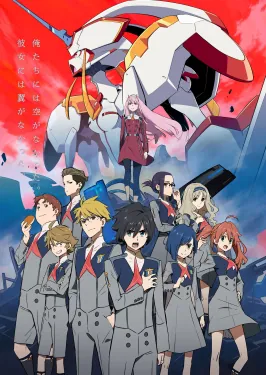

The genetics
Biological engineering underpins the series' dystopia. Because APE's immortality treatment left adults sterile, children are produced artificially as expendable pilots, raised in isolation, indoctrinated and injected with substances that keep their reproductive organs working for piloting but shorten their lives. The heroine, Zero Two, was created by Dr. Franxx by crossing the genes of the Klaxosaur Princess with human genes; he tortured her in experiments and cloned her to produce the 'Nines', though he later tells the truth and Zero Two thanks him for creating her. Her hybrid blood transforms Hiro when he drinks it. The series presents APE as an authoritarian body that treats children as cannon fodder and turns out to be serving an alien race, and its critique targets the dehumanization of children by unchecked scientific and political power. The hybrids, clones and immortality treatments have no real-world basis.
How genetics is portrayed
- Overall portrayal of genetics
- negative Engineering children, hybrids and clones is the instrument of an authoritarian, alien-controlled regime and a cruel scientist; the series sides with the children who free themselves.
- Outcome of the genetic intervention
- negative The engineered children live short, controlled lives as soldiers, Zero Two suffers years of experiments, and the hybrids' bond ends in the deaths of Hiro and Zero Two.
- Dr. Franxx
- ambivalent Aim: military, curiosity (negative). Working for APE, he creates Zero Two from human and Klaxosaur genes to pilot the Star Entity, tortures her in experiments and clones her into the Nines; he is shown as cruel, yet later reveals the truth and Zero Two thanks him for creating her.
- APE and Papa
- villain Aim: military, power (negative). The ruling organization manufactures children as pilots, injects them with life-shortening treatments and wipes their memories; it is revealed to be controlled by the alien VIRM and is the series' final enemy.
The story
In a post-apocalyptic future, humanity lives in mobile fortress-cities called Plantations, threatened by giant monsters called Klaxosaurs and ruled by the organization APE and its god-like leader, Papa. Adults are immortal but can no longer reproduce, so APE artificially creates children, called 'parasites', and raises them to pilot giant mecha, the Franxx, in male-female pairs. Hiro, a failed pilot of Squad 13, teams up with Zero Two, a horned elite pilot with Klaxosaur blood whose earlier partners all died. Hiro learns that they met as children, when he helped her escape from the scientist Dr. Franxx, who created her by crossing human genes with those of the Klaxosaur Princess, and that APE's treatments shorten the pilots' lives. APE turns out to be controlled by the alien VIRM, who plan to destroy the Earth. Hiro and Zero Two defeat the VIRM fleet and die together, while the surviving parasites build a free life on Earth.